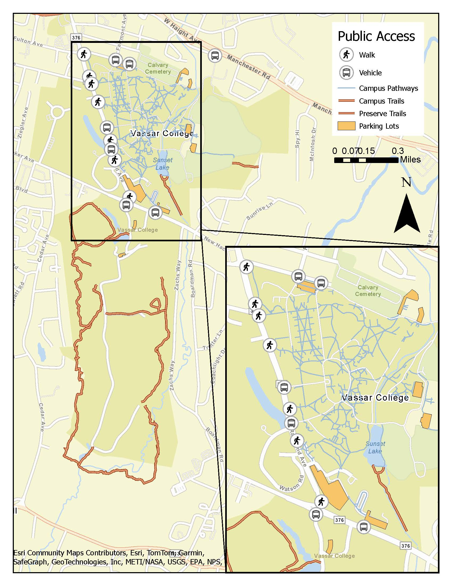

NYS Invasive Species Grant Proposal Mapping
Working with a biology professor and the director of the Vassar ecological preserve, I created maps for an invasive species removal and restoration proposal to send to the New York State Invasive Species Grant on behalf of Vassar College.

Project Details / Background
In 2026, I worked with Myra Hughey, associate professor of biology at Vassar College, and Keri Van Camp, Director of the Vassar Ecological Preserve to develop two maps as part of a proposal for invasive species removal and riparian buffer restoration along the Casperkill stream that runs through the college’s campus. This proposal was developed for the NYS ISGP. The plan was to clear invasive species and underbrush from a large portion of the west bank of the stream. Part of this area would have been fenced off and goats brought in to eat invasive upshoots. This would be a proof of concept to enact to larger portions of the campus and the preserve if proven an effective method of invasive removal.
The application required two maps, one showing the extent of the project and another showing all hiking trails, parking lots, and public access entrances to the project extent. The three of us worked together to develop the maps with two phases.

This is the public access map that shows this project would help support public engagement with nature.